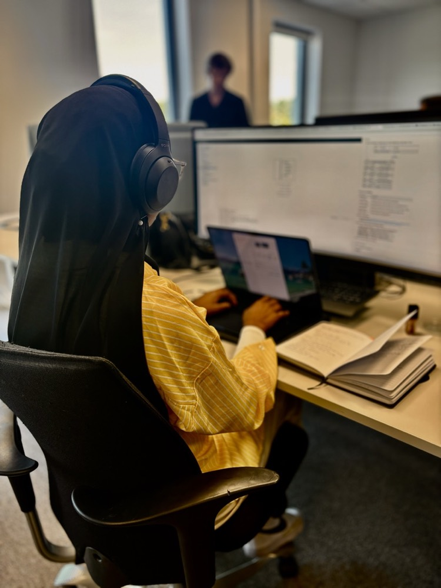

IT-student · Universitetet i Agder
Hamdi Dagane
Utvikler · LA / Mentor · Praksisstudent (ServiceNow)
Jeg bygger løsninger som faktisk skal brukes, og tar ansvar for både koden og menneskene rundt den.

Om meg
Tech Bakgrunn
Jeg er tredjeårsstudent i IT og informasjonssystemer ved Universitetet i Agder. Min store interesse er systemutvikling, backend og databaser. Det er her jeg vil bygge dypest.
Jeg har jobbet med backend i C#, frontend i React og TypeScript, ServiceNow og AI-assistert utvikling, og lærer raskt der det trengs.
Lærevillig
Jeg lærer nye verktøy og fagområder raskt, og jeg vil alltid lære mer.
Initiativrik
Jeg tar ansvar og driver arbeidet fremover, uten å vente på at noen sier det.
Tilpasningsdyktig
Jeg har jobbet i startup, i stor organisasjon og i undervisning, og bytter lett mellom roller.
Problemløser
Jeg vil forstå hvorfor noe ikke virker, og finne en løsning som holder.